Isard Miralles
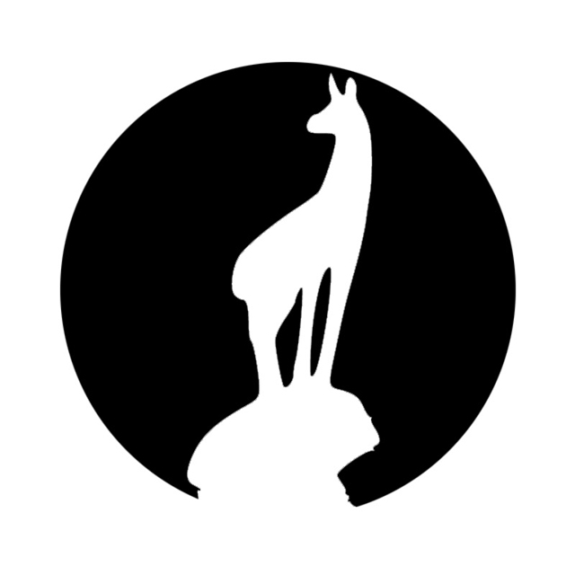Il·lustrador, dissenyador, experimentador i bateria. Som "col·laboradors habituals". Imprescindible.
☞
Marc Torrecillas
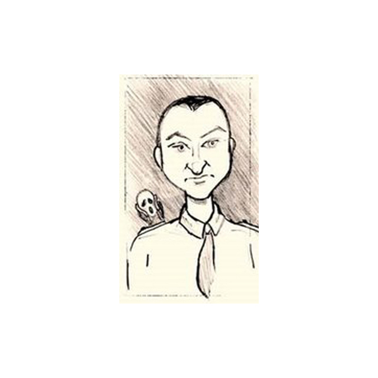Dissenyador gràfic, il·lustrador, ninotaire, caricaturista, autor i director de teatre. Fonamental.
☞
Josep Niubó
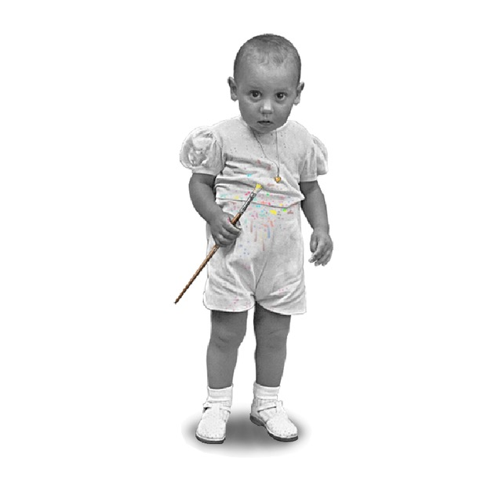Les il·lustracions i pintures de Josep Niubó fascinen la meva ment des de que era petit. Genial.
☞
Eduardo Corria
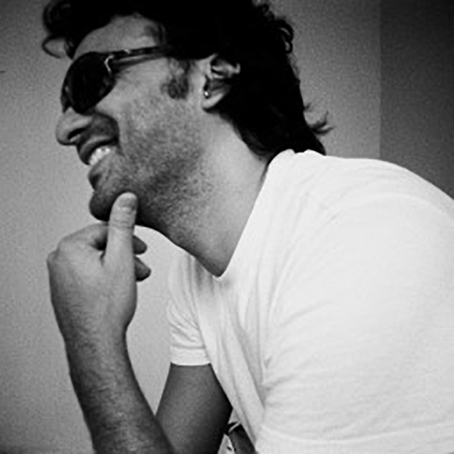Mestre de l'edició de color, la fotografia, el vídeo i la història i teoria del cinema. Podeu seguir-lo a Instagram.
☞
Sondelvent
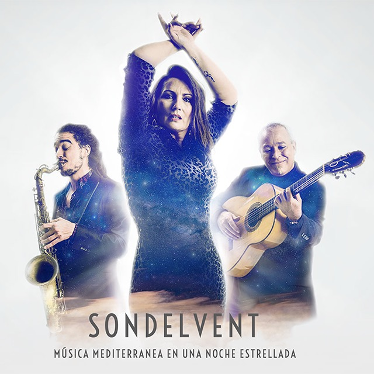Fan música mediterrània per a nits estelades. Màgic.
☞
Pont del Petroli
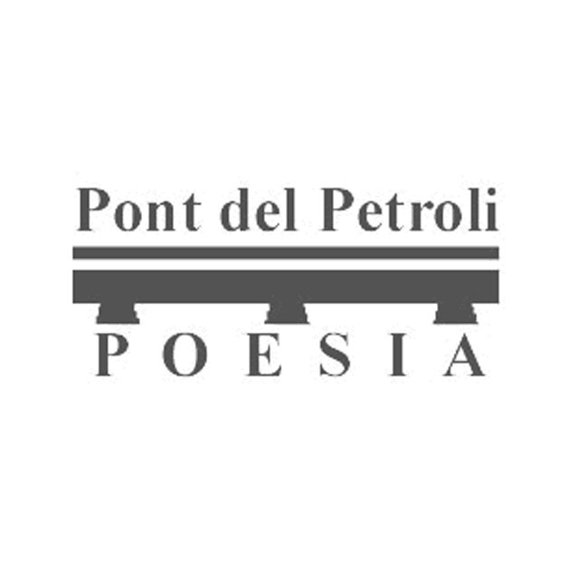Una editorial de poesia en llengua catalana, única en el món, que edita meravelles artesanals i porta la poesia al carrer. Aquesta és la valenta aventura de Joan Puche i Paco Fanés.
☞
Helena Bonals
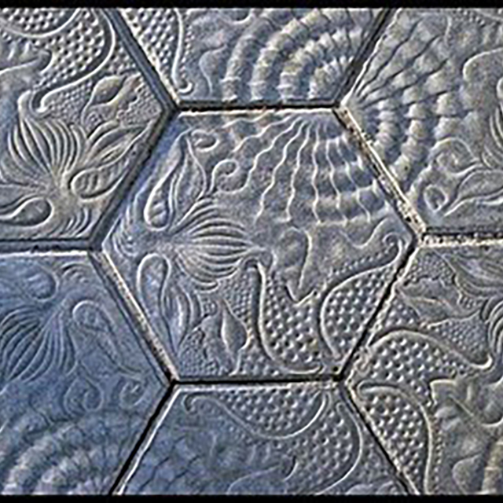Autora del bloc sobre poesia "Una cosa molt gran en una de molt petita". Motivador.
☞
Manuel Delgado
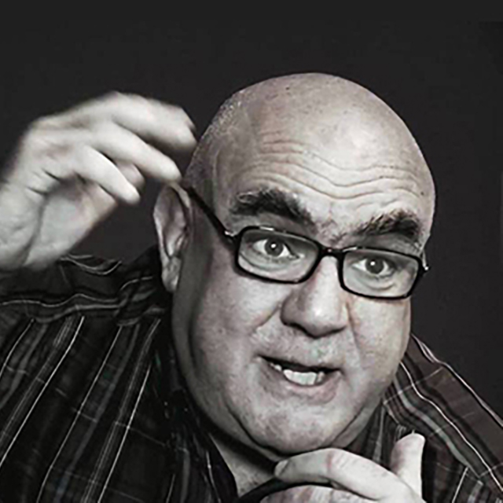Un fil de reflexió sobre les comunitats humanes, un raig de llum antropològica sobre el nostre temps, de la mà del professor i camarada.
☞
TPK
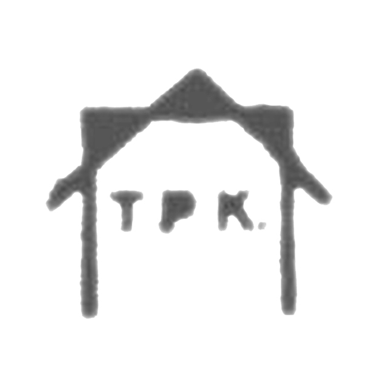El TPK Art i Pensament Contemporani és un centre d'art de l'Hospitalet de Llobregat, completament singular, on s'impulsa l'experimentació d'avantguarda.
☞
Manuel Cutando
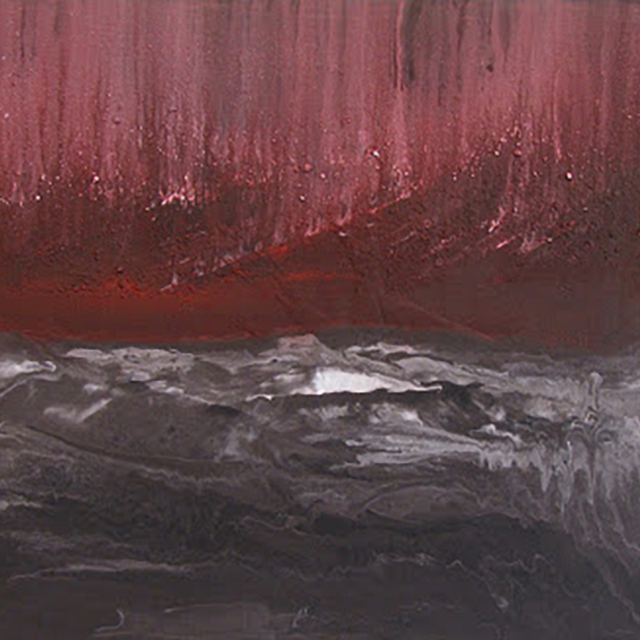Textures evocadores i fascinants. Un pintor per perdre's en les seves obres. Recomanable.
☞
Judith Themistanjioglus
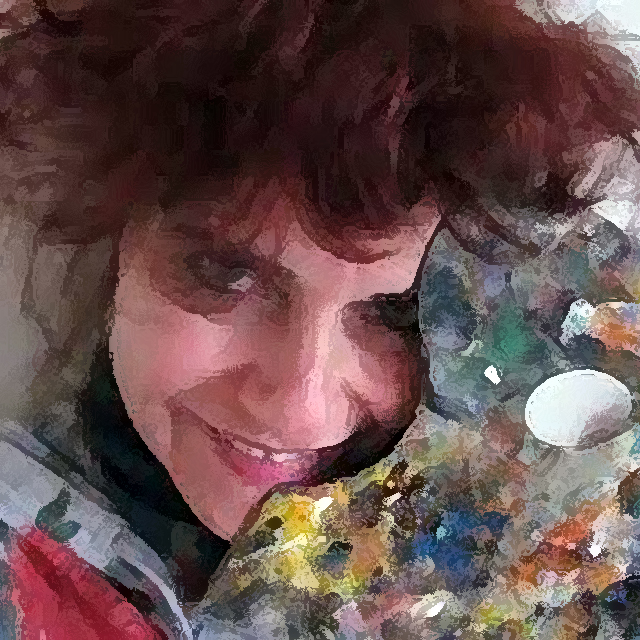És pintora i al seu pas els carrers s'omplen literalment de colors. Única.
☞
Quim Varela
Tipògraf, dissenyador, fotògraf i navegant. Bang!
☞
Raúl de la Morena
Fotògraf i documentalista audiovisual que estén una mirada diferent sobre la realitat. Contundent.
☞
Piano piano
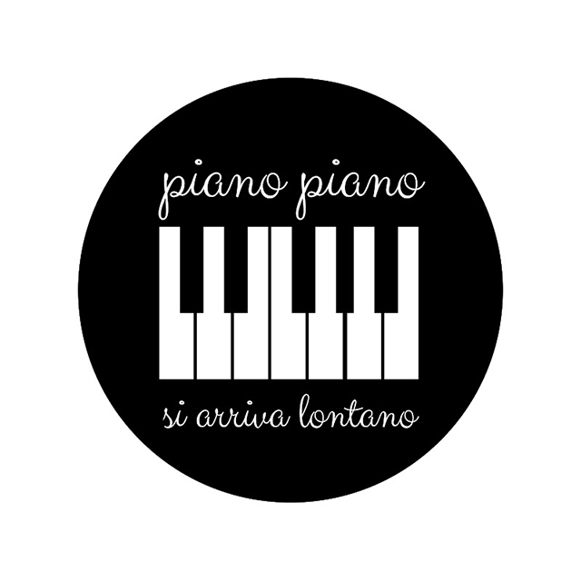Pianista, compositor i beatlemaníac. Excel·lent.
☞
Elisenda Solà-Niubó
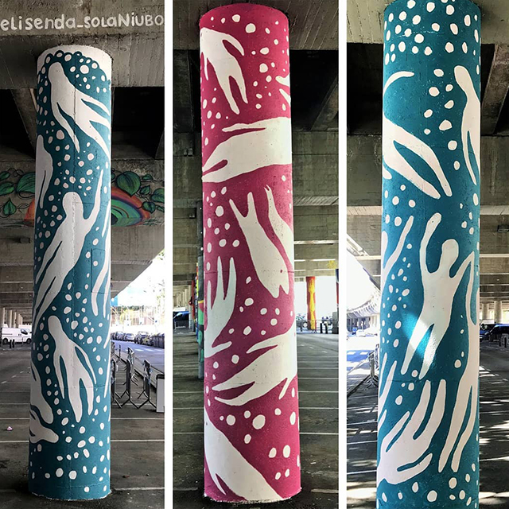Muralista i creadora de projectes comunitaris. "Crear és una experiència".
☞
Batlles
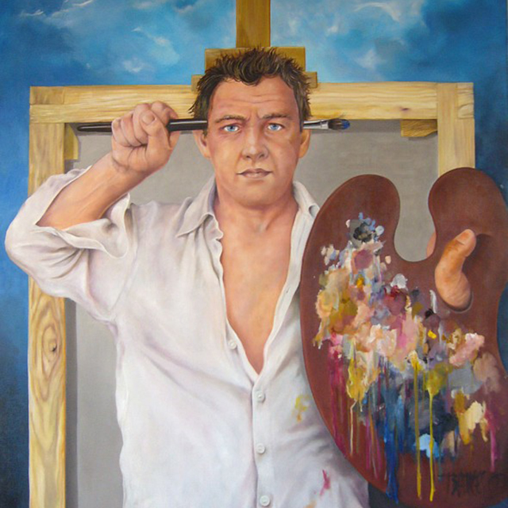Formidable dibuixant, pintor i vinyetista. No us deixarà indiferents.
☞
Neus Català
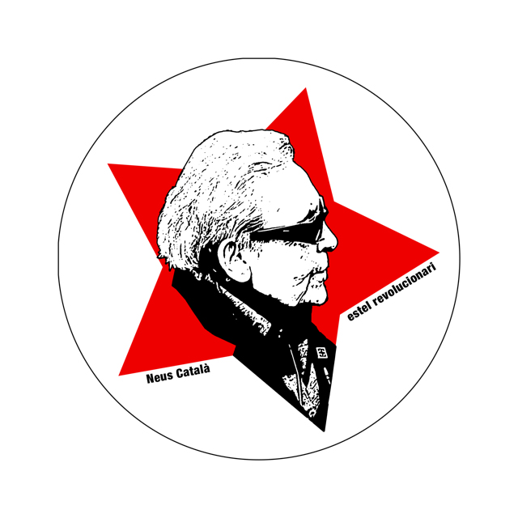Una de les dones més admirables que he tingut el plaer de conèixer. Va ser tot un honor col·laborar amb la Neus i la històriadora Elisenda Belenguer en el projecte de la web
www.neuscatala.cat.
Soledad Real
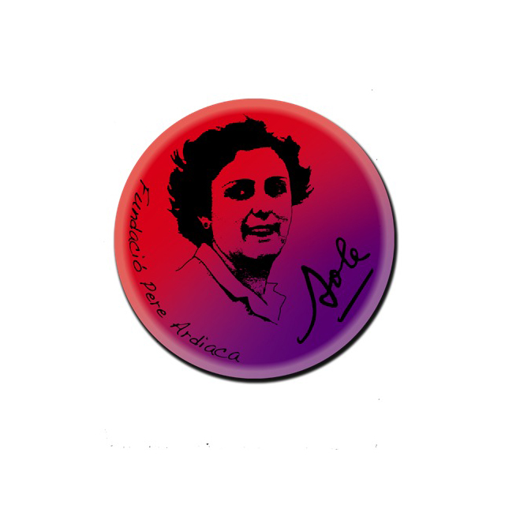Resseguint els passos de la Sole en la lluita clandestina contra el franquisme, un exercici de memòria històrica necessari.
☞
Codrops
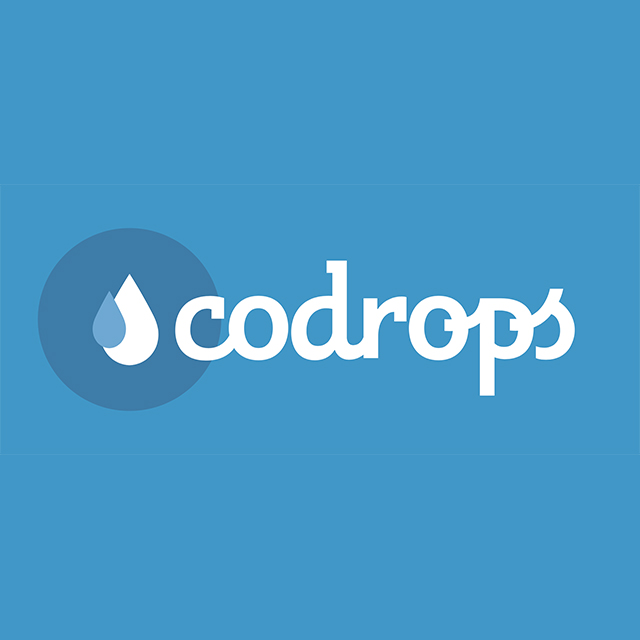Un blog de referència en el disseny gràfic i el desenvolupament web.
☞